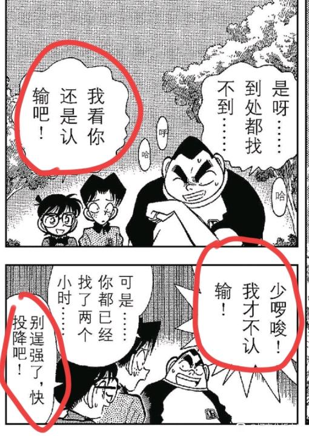
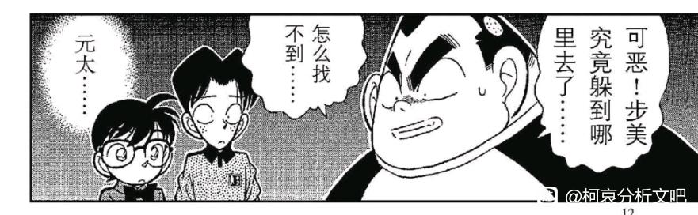
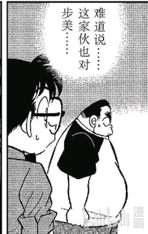
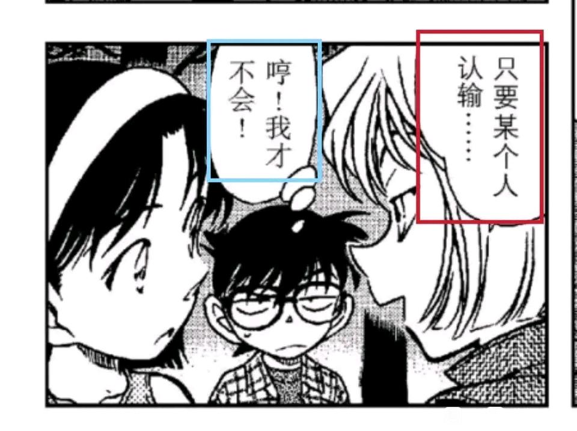
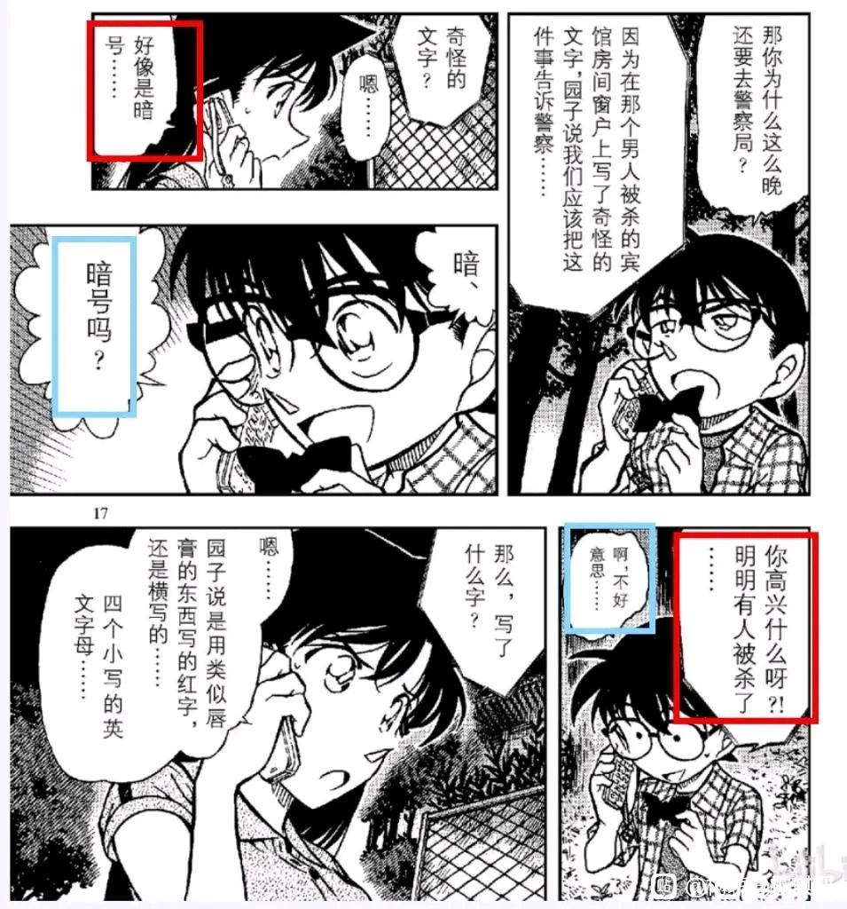
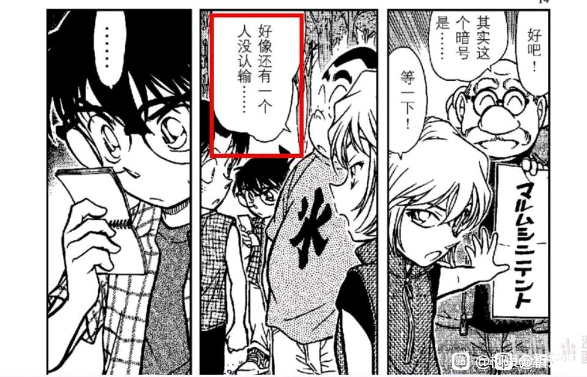
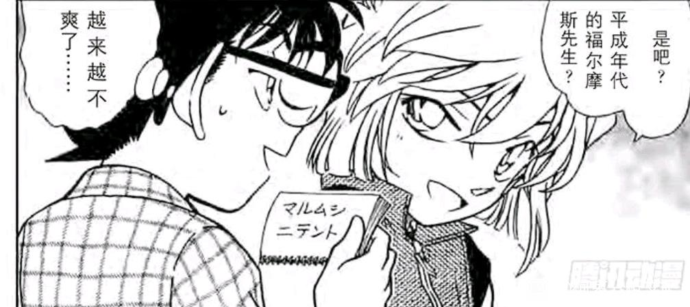
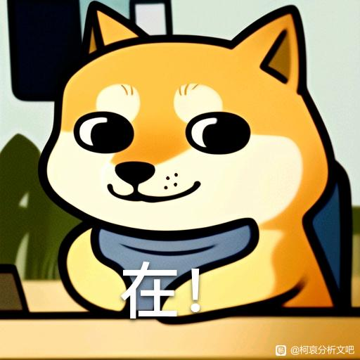

不知道有没有人发过这个，柯南根据元太不肯向步美认输的态度，来推断他喜欢步美。
那是不是说明，不肯向小哀认输的柯南，其实就是喜欢小哀。
那是不是说明，不肯向小哀认输的柯南，其实就是喜欢小哀。






难道你真的是天才？
2024-05-17 07:14 | 暝色:

细牙 是个新点哎
2024-05-17 08:12 | 暝色:回复 叮当小丸子🎃 :
小哀看柯南还没认输让博士等一下，你就宠他吧。
2024-05-17 08:12 | 暝色:我也觉得小哀好宠
我忘了这剧情是啥了，是不是他解暗号的时候，小兰那边也要让他解个暗号
2024-05-17 09:45 | EdwardClow:对，结果柯南没管兰神2024-05-17 10:19 | 暝色:这里柯南有点反常，小兰那边发生命案了，按理说是她那边比较重要的，可柯南心思还在「解开小哀的暗号」这里，小哀的迷题解开后，他才想起小兰有危险。2024-05-17 10:42 | 🌐之徙:回复 暝色 :是我最喜欢的【神社鸟居惊人暗号】，一点也不反常，当时柯南对小哀箭头都爆表了。2024-05-17 11:16 | 暝色:回复 🌐之徙 :我说的反常是指他居然不在意兰那边发生命案啦2024-05-17 11:27 | 世界上没有真理:按照往常，他都是哪里有命案，他就往哪里跑的
回复 暝色 :這邊要細細品味的劇情，不然我第一次看也以為是新蘭糖因為泳裝照，後來看了吧友們的分析再去看一次就不一樣了，只能說青山敘詭很厲害2024-05-17 17:58 | 起名很难aw:回复 世界上没有真理 :能指路下帖子吗2024-05-17 20:24 | 世界上没有真理:回复 起名很难aw :【折叠的时刻•陆】手机篇柯哀的峰回路转 從91樓開始


2024-05-17 10:25 | 暝色:
柯南对暗号本身就很痴迷，但是元太对捉迷藏没那么痴迷吧，谁出的暗号他都会磕到底
2024-05-17 10:23 | 暝色:如果是这样的话，那青山就太刻意了，因为小兰那边发生命案了，她不知道该怎么办才打电话给新一，而新一的心思却一直在「小哀给的迷题」这里，他是破解迷题后才想起小兰有危险的（这要是以前，他肯定是以命案为主的)，这反倒说明他更在乎小哀了。2024-05-17 10:43 | 🌐之徙:元太捉迷藏很厉害的，应该称得上痴迷，例如本案元太就找到了所有人。2024-05-17 10:44 | 🌐之徙:此外还有紧急事态252，也只有元太在认真捉迷藏。
细节
2024-05-17 10:24 | 暝色:我怀疑青山是故意的，任何时候都是命案更重要，而这次柯南却很反常，他更在意小哀给的迷题，破解迷题后才想起小兰有危险。2024-05-17 10:26 | EdwardClow:回复 暝色 :青山非常擅长对比，通过这种手法告诉读者他真正想刻画的2024-05-17 10:31 | 暝色:回复 EdwardClow :我也觉得2024-05-17 10:31 | 暝色:回复 暝色 :打错了，元太2024-05-17 11:05 | EdwardClow:回复 暝色 :是啊，这是柯南的潜意识，只不过他自己还没注意到，他真正明白的时候也是名柯大结局的时候
这一案，小兰咋咋呼呼的，上来就“新一救我”，结果一听，原来小兰在警察局里 不是挺安全的吗？然后柯南就各种不重视，死磕小哀暗号，对小兰那边基本就不管了。
不是挺安全的吗？然后柯南就各种不重视，死磕小哀暗号，对小兰那边基本就不管了。
不是挺安全的吗？然后柯南就各种不重视，死磕小哀暗号，对小兰那边基本就不管了。2024-05-17 11:17 | 暝色:
永远喜欢神社鸟居！这个表情绝对把柯南迷住了，谁受得了这个。

2024-05-17 10:54 | 世界上没有真理:神社鳥居是真的厲害，因為新蘭黨那邊也覺得是糖，佩服青山煙霧彈的功力2024-05-17 10:58 | 🌐之徙:回复 世界上没有真理 :确实，新兰那边磕小兰的泳装照片（但说实话这一案小兰是真的惨，明明没做错事，但被园子偷拍，被柯南无视，只能靠自己打败犯人，也没人夸她）2024-05-17 11:20 | 暝色:回复 🌐之徙 :没人夸她233333332024-05-17 11:28 | 世界上没有真理:回复 🌐之徙 :大大那篇神社鳥居的分析很厲害，我也是看了您的分析之後才發現柯南的箭頭在這邊就已經很濃厚了2024-05-17 19:32 | NCC74656Voyage:哀殿太撩了太撩了2024-05-20 04:59 | 贴吧用户_0NyDNJt:真的好好看啊那时候的画风

鸟居暗号确实是很怀念的篇章
2024-05-17 12:48 | 暝色:很精彩啊
无论戏内戏外都很感慨，戏内兰姐的泳装娇羞和一如既往的无脑求助，哀对福尔摩斯的调戏，以及某位大侦探立刻被撩拨起的胜负欲。戏外南姐和73在暗号破解上的故事也很有意思。不过后续的争执确实足够搞笑，至今都难以想象被传泳装照对兰自己来说是一件很好的事，真能吃的下去啊。
2024-05-17 11:21 | 暝色:泳装这个嗑点还挺奇怪的……
想回去再看看动漫 第几集
2024-05-17 11:14 | 暝色:动画我不知道第几集……我看的是漫画啦2024-05-18 04:09 | 贴吧用户_aSAKXRW:回复 暝色 :请问漫画是哪一册呀？2024-05-18 04:20 | 暝色:回复 贴吧用户_aSAKXRW :71话和491话
啊？这是哪一话？
2024-05-17 12:05 | 暝色:元太步美那个是71话，柯南小哀那个是491话

2024-05-17 12:39 | 暝色:回复 鱼白小满 :你
这个点好，不过我估计一换到哀身上他就又不自知了
2024-05-17 12:39 | 暝色:他看别人倒是挺清晰的，唯独猜不透小哀。
主要这两篇差了几百话，如果能有第三个“不服输”被认证为“喜欢”的篇章会更加有参考性，不然只能当糖磕了
2024-05-17 13:01 | 暝色:哈哈哈我还在重温呢
先磕了
2024-05-17 13:11 | 暝色:

人才！
牛的
天才
插个眼
神社鸟居的暗号是青山写给南姐的，没一会就给南姐破了，于是青山就把这个暗号加进了漫画里，众所周知哀是青山在漫画里的化身，柯南就是南姐在漫画里的化身，夫妻秀恩爱呢
鸡肚你的菜花
天才！
柯南特性不服输，哀特性好胜，那谁特性威吓呀
btw，兰的几个经典名场面，表现出她的恋爱观是应该“认输”
1、和叶平次推理对决，柯南和平次组队，兰姐希望柯南放水给和叶让和叶赢。然而服部和叶一开始都想赢过对方，服部中间虽然尝试放水，但是潜意识的行为还是让他赢过了和叶（并且非常得意），和叶虽然不高兴，但是还是说“自己喜欢看到平次破案后的表情”（换言之如果服部认输了，和叶还会那么高兴吗？）
2、经典的甜甜圈事件，新一向兰认输，伟大，无需多言。
1、和叶平次推理对决，柯南和平次组队，兰姐希望柯南放水给和叶让和叶赢。然而服部和叶一开始都想赢过对方，服部中间虽然尝试放水，但是潜意识的行为还是让他赢过了和叶（并且非常得意），和叶虽然不高兴，但是还是说“自己喜欢看到平次破案后的表情”（换言之如果服部认输了，和叶还会那么高兴吗？）
2、经典的甜甜圈事件，新一向兰认输，伟大，无需多言。
2024-05-23 01:53 | 暝色:2024-05-23 01:55 | 你说我是谁哦耶:回复 暝色 :这个还好了，就是和叶平次对决下一集，要结合语境看，当时投手失误了，兰就回忆新一罚点球飞了最后输了，但是坦然接受失败，兰觉得背影很帅，青山算是在致敬意大利的巴乔了。2024-05-23 02:15 | 暝色:回复 你说我是谁哦耶 :也对啦